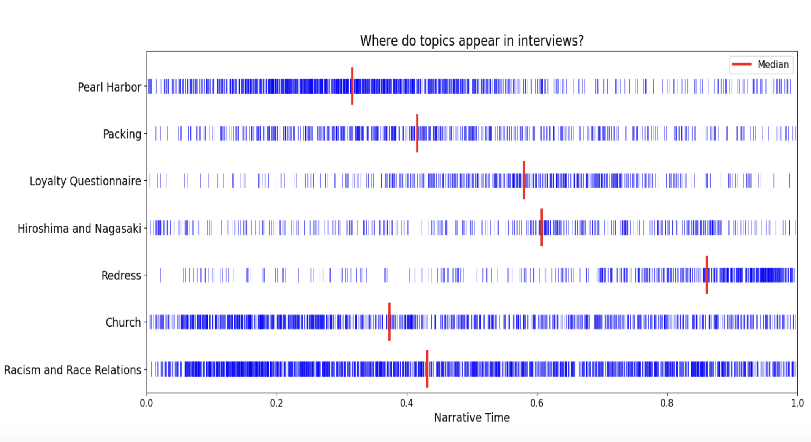
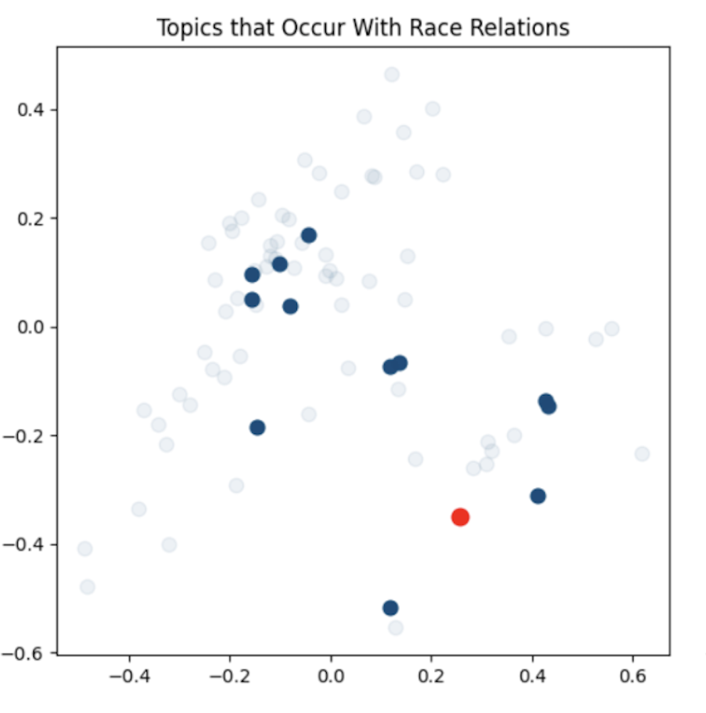
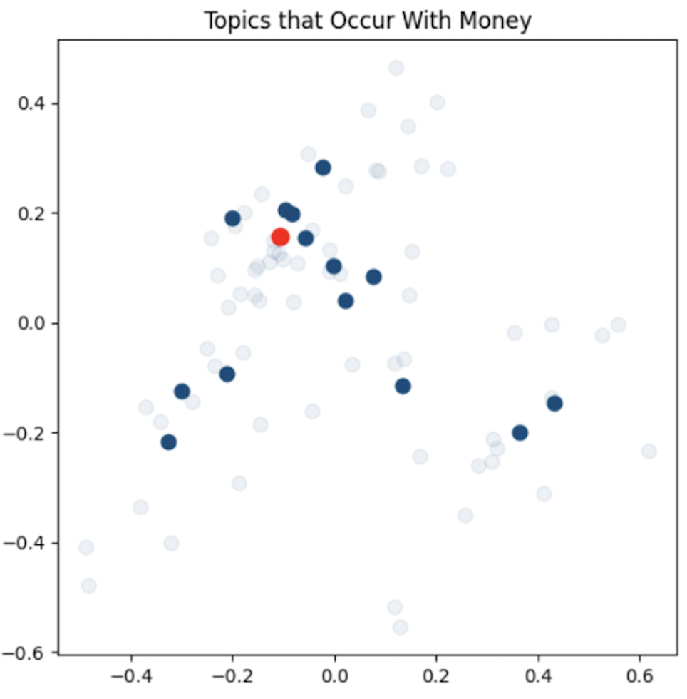
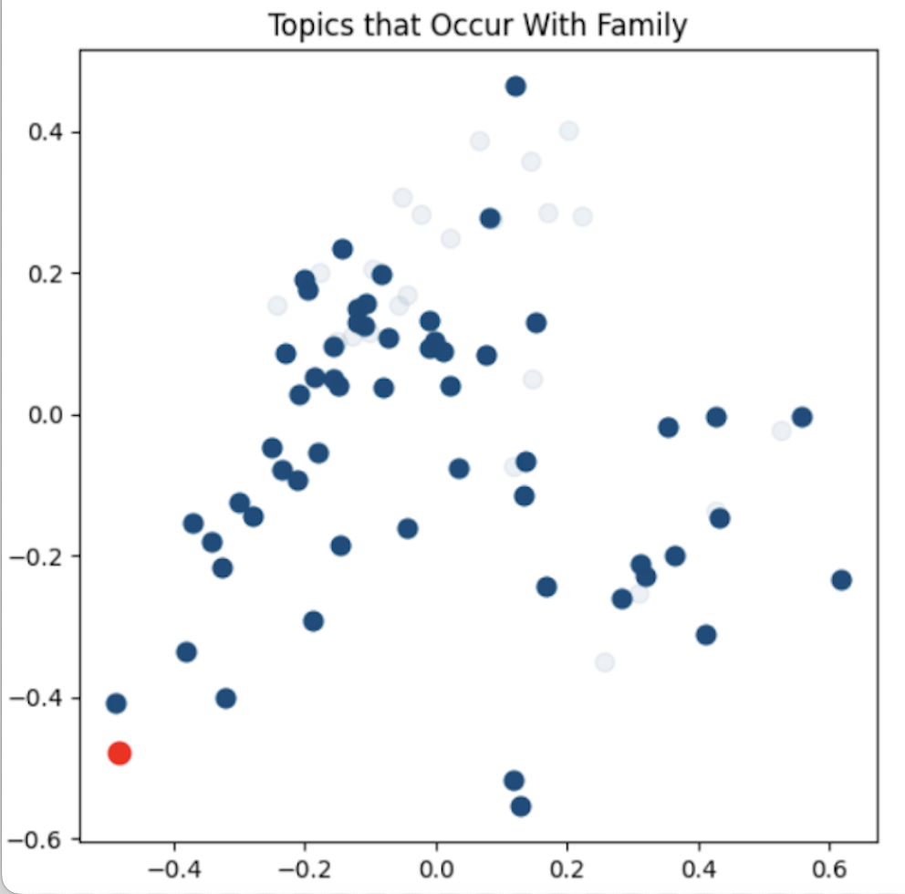

An experiment in natural language processing and data vis
For my senior thesis, I researched how natural language processing can help historians and archivists work with oral history collections, motivated by the challenge of drawing connections across across hundreds of documents. Specifically, I worked with Densho’s collection on Japanese incarceration during World War II.
I routinely found myself running a topic modeling algorithm,* recording the output in a text file, and then reading the corresponding interviews to interpret the results. This process made me wonder: what would an interface for exploring relationships across an archive look like?
As an experiment, I built interactive visualizations based on two analyses from my thesis. The goal for each is to 1.) teach the reader something about the collection at large, and then 2.) lead the reader to engage with individual testimony.
I grouped similar questions into "topics" using a sentence-embedding tool called BERTopic. For example, many questions about packing during the forced evacuation are grouped in a topic about belongings:
What did you pack?
How about personal things, like photos and photo albums?
And then what happened to things that you did not pack? Do you remember the things that you had to leave behind?
And each person, how many suitcases were they allowed to have?
Then, for a bird's eye perspective on interview progression, I plotted topic questions by their timing.

Upon seeing this chart, I was immediately curious about individual data points: why do a few interviews begin with questions about Hiroshima and Nagasaki? What are the various contexts in which thematic topics like church and race arise?
To help answer these questions, I built an interactive visualization of interview questions and their timing by topic. I wanted to present the relationship between individual interviews and the collection as a whole, so if you select a question, the display drills down to only questions from that interview.
Interestingly, interviews rarely follow the "median" progression suggested by the collection-level view.
I also performed topic modeling on the entire collection using LDA, which identifies words that frequently appear together.
I was interested in understanding the associations between topics; for example, when narrators discusses money, what else are they talking about? In my analysis, I could see that money arose in discussion of Japantown businesses, pre-war work in farming and fishing, selling items and land during the forced evacuation, and reparations.
Q: Did you have any other jobs, aside from cleaning your piano teacher's house? Tell me a little about that.
A: After school, every summer, we would go out to the berry fields and pick strawberries and raspberries, and whatever. But we earned money then for our school clothes.
Q: Do you think kids these days work that hard?
A: Well, berry picking is hard. You don't find many kids out in the berry fields now. But, and that's too bad, because we had a lot of fun doing it, too.
Q: So talk about, so the weeks leading up to when you have to leave, what kind of arrangements did you make in terms of who would harvest the peaches when you were gone, who would take care of the land, the farm?
A: Well, at that time, we had no arrangement. This was all done on a handshake. And actually, we were on the side that, "Would you take care of my property while I'm gone?" And my neighbor, he's a German, and he says, "Don't worry, I'll harvest your crop." Well, I don't remember if we got anything out of the crop as far as money goes. I don't know if he made any money or not. So financially, yeah, it was really a big financial loss for us. 'Cause we raised the crop, and we had put all the labor and all the expense in, and then we left. When the government says, "Get out," well, you got out.
A: Well, don't forget, as far as getting it and appreciating it. But you know, like I think the twenty thousand, I don't think, it never could replace the freedom we lost. Like we said, I could tell the students that, when I go to talk to 'em, said, "You know, you lose your rights, your constitutional right, you don't realize it until you do," I said. You get stuck back there in the fence like that, losing your own constitutional right and all that. Because technically speaking, man without a country. And that apology, I think just as much about the apology as I do about the twenty thousand dollars. [Laughs]
Q: How did the apology make you feel?
A: Well, I felt a little better. But it'll never take away the years I lost in camp.
To visualize the relatedness between topics, I created a few static charts in which each topic is a dot, and topics that co-occur with the “central” (red) topic are highlighted. Obviously, this chart has limitations. The dot positions are based on their word embedding projections (and while these are meaningful, they are also obscure), and the dots themselves are not particularly compelling. However, I was excited by concept of one idea prompting others to light up.



Instead of dots, I decided to represent topics by their keywords, which are immediately evocative. When you select a keyword, only keywords from co-occuring topics remain.
Each pair of topics tells a story.
Fishing & livelihood
Pearl Harbor & reflection
After selecting two topics, you can read interview segments that include them. This aspect is important because I believe visualizations of archival collections should bring readers in and offer new ways of thinking with the material, rather than simply abstracting it.